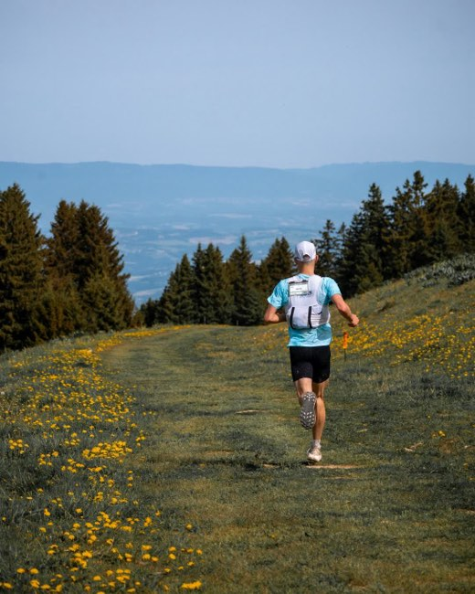
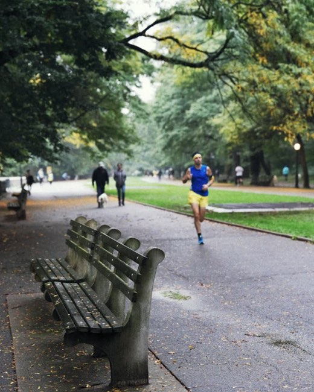
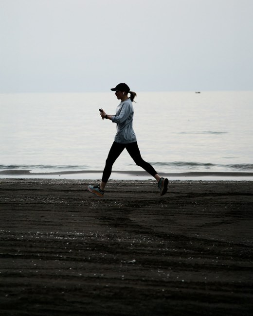
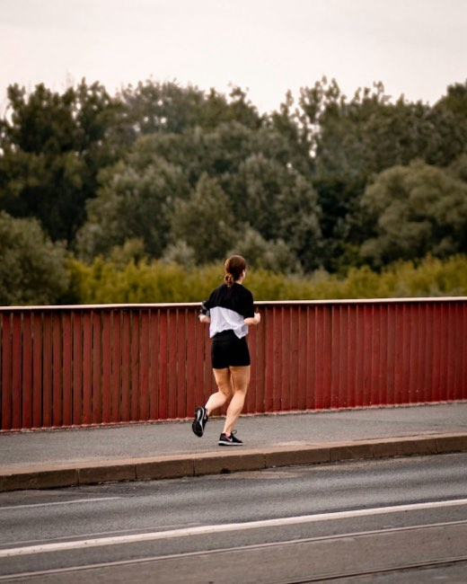
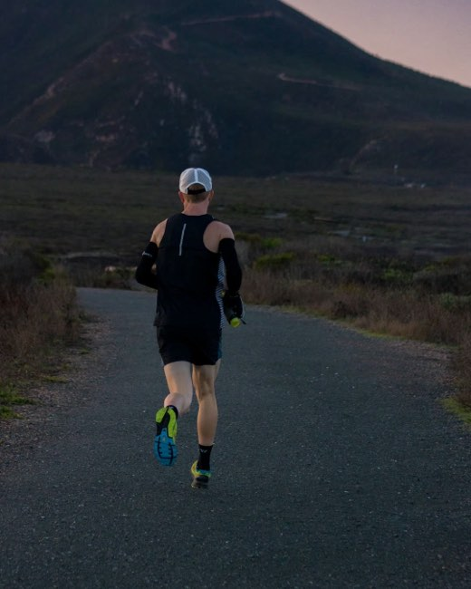

בלוג
על ריצה, ביחד
אימון, תזונה, בטיחות ומחקר. לרצים שמחפשים חברה בדרך.
חדש: גוף וציוד
כאב בריצה: מתי להמשיך, מתי לעצור, ואיך לא להיפצע
שיטת הרמזור לכאב, הכלל החדש של 30 הימים, וחמש הפציעות הנפוצות אצל רצים.
לקריאה
איך לבחור נעלי ריצה: מה המחקר באמת אומר
פרונציה, ריפוד, נעלי קרבון ומתי להחליף. ואיך בוחרים זוג בחנות בעשר דקות.
לקריאהכאב בצד בריצה: למה זה קורה ומה באמת עוזר
שלוש תיאוריות, ניסוי אחד עם מיץ תפוזים, ומה לעשות כשהדקירה תופסת.
לקריאהמדריכים מעמיקים

מאפס ל-5 ק״מ: תוכנית ריצה של 9 שבועות למתחילים
שבוע אחרי שבוע, מדקה של ריצה ועד חצי שעה רצופה. עם טבלה, מבחן הדיבור ומה עושים כשקשה.
לקריאה
ריצה בחום ובלחות של ישראל: המדריך המלא
מתי לצאת, כמה לשתות באמת, איך מסתגלים לחום, ואיך מזהים מכת חום לפני שהיא מסוכנת.
לקריאהלמה קל יותר לרוץ ביחד: מה המחקר אומר
אפקט קלר, הדבקה חברתית אצל מיליון רצים, וההיי של מאמץ משותף.
לקריאהאימון כוח לרצים: 20 דקות פעמיים בשבוע שמונעות פציעות
מה המחקר אומר על פציעות וחסכוניות, שבעה תרגילים לבית, ותוכנית של 8 שבועות.
לקריאה
מה לאכול לפני ריצה ואחריה: המדריך המעשי
מתי, כמה ומה, עם דוגמאות מהמטבח הישראלי. משוקו ועד תמרים, וגם קפה.
לקריאה
לרוץ לאט כדי לרוץ מהר: שיטת 80/20
למה רוב הריצות צריכות להיות קלות, ומה הניסויים באמת מצאו.
לקריאהקצר ולעניין